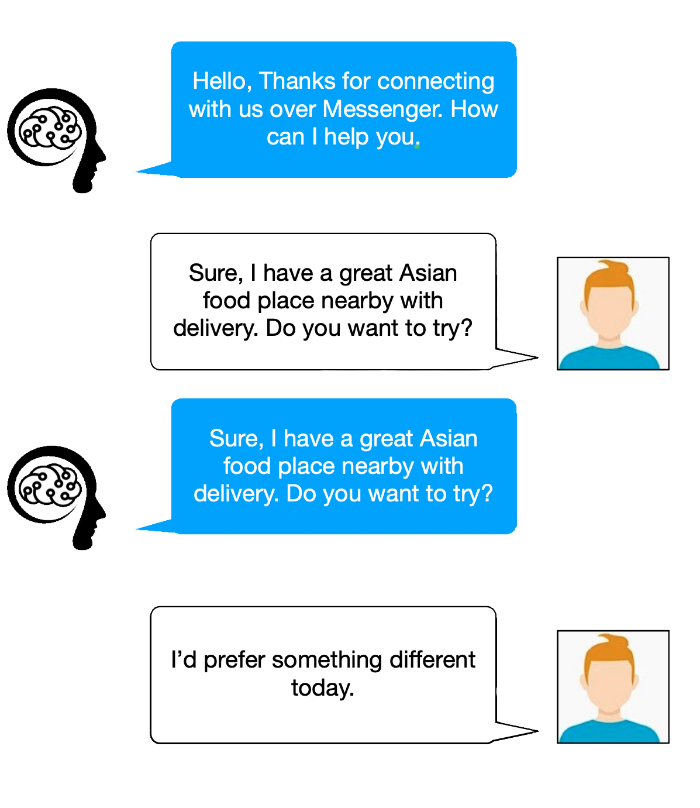

<div class="header">
    <div  fxLayout="row"  fxLayout.xs="column" fxLayout.sm="column" [ngClass]="getContainer()">
    <div fxFlex>
        <div class="mat-display-3 ">
            Build contextual assistants<br> that really help customers
        </div>
        <div class=".mat-subheading-2">
            Alira is the standard infrastructure layer for developers to build, <br>
            improve, and deploy better AI assistants.
        </div>
        <div class="btn-class">
            <button mat-flat-button  
            class="btn" disableRipple=true>Get Started → </button>
        </div>
        
    </div>
    <div fxFlex fxLayoutAlign="end start">
        <div class="chat">
            
        </div>
    </div>
</div>

</div>
